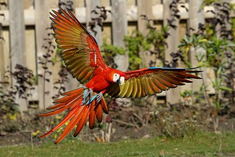

The scarlet macaw (Ara macao) is a large red, yellow, and blue Central and South American parrot, a member of a large group of Neotropical parrots called macaws. It is native to humid evergreen forests of the Neotropics. Its range extends from south-eastern Mexico to the Peruvian Amazon, Ecuador, Colombia, Bolivia, Venezuela and Brazil in lowlands of 500 m (1,600 ft) (at least formerly) up to 1,000 m (3,300 ft), the Caribbean island of Trinidad, as well as the Pacific island of Coiba. Formerly, it ranged north to southern Tamaulipas. In some areas, it has suffered local extinction because of habitat destruction, or capture for the parrot trade, but in other areas, it remains fairly common. It is the national bird of Honduras. Like its relative the blue-and-yellow macaw, scarlet macaws are popular birds in aviculture as a result of their striking plumage.
The scarlet macaw was formally described by the Swedish naturalist Carl Linnaeus in 1758 in the tenth edition of his Systema Naturae under the binomial name Psittacus macao. The scarlet macaw is now placed in the genus Ara (Lacépède, 1799), one of 6 genera of Central and South American macaws.
The two subspecies can be recognized by size and color detail in the feathers on the wings.
In May 2013 it was announced that a team of scientists, led by Dr. Christopher M. Seabury and Dr. Ian Tizard of Texas A&M University had sequenced the complete genome of the scarlet macaw.
It is about 81 centimeters (32 in) long, of which more than half is the pointed, graduated tail typical of all macaws, though the scarlet macaw has a larger percentage of tail than the other large macaws. The average weight is about 1 kilogram (2 lb 3 oz). The plumage is mostly scarlet, but the rump and tail-covert feathers are light blue, the greater upper wing coverts are yellow, the upper sides of the flight feathers of the wings are dark blue as are the ends of the tail feathers, and the undersides of the wing and tail flight feathers are dark red with metallic gold iridescence. Some individuals may have green in the wings.
There is bare white skin around the eye and from there to the bill. Tiny white feathers are contained on the face patch. The upper mandible is mostly pale horn in color and the lower is black. Juveniles have dark eyes; adults have light yellow eyes.
It is frequently confused with the slightly larger green-winged macaw, which has more distinct red lines in the face and no yellow in the wing.
Scarlet macaws make very loud, high and sometimes low-pitched, throaty squawks, squeaks and screams designed to carry many kilometers to call for their groups.
The scarlet macaw can live up to 75 or even 90 years in captivity, although a more typical lifespan is 40 to 50 years.
A typical sighting is of a single bird or a pair flying above the forest canopy, though in some areas flocks can be seen. They may gather at clay licks. Scarlet macaws communicate primarily through raucous honks; however, vocal communication is highly variable, and captive macaws are known to be adept mimics of human speech.
Wild scarlet macaws feed on fruits, nuts, seeds, flowers and nectar. They also love to eat insects and larvae. They are seen feeding heavily on bugs, snails and foliage. Snails and bugs are great source of protein, as they need additional protein during breeding seasons.
While comparatively docile at most times of the year, scarlet macaws may be formidably aggressive during periods of breeding. Scarlet macaws are monogamous birds, with individuals remaining with one partner throughout their lives. The hen lays two or three white eggs in a tree cavity. The female incubates the eggs for about five weeks, and the chicks fledge from the nest about 90 days after hatching and leave their parents about a year later. Juveniles reach sexual maturity at five years of age.
The South American range is extensive and covers the Amazon forest, extending to Peru east of the Andes, to Bolivia. In Bolivia, it is very present in the Aquicuana Reserve, located in the Beni Department, near the city of Riberalta, the Capital of the Bolivian Amazon.
In Central America, the range extends from extreme eastern and southern Mexico and Panama through Guatemala and Belize, the island of Coiba and infrequently on the mainland of Panama, and in Costa Rica in isolated regions on the Pacific Coast; the Nicoya Peninsula the Carara National Park and Peninsula de Osa.
The scarlet macaw has escaped or been deliberately released in to Florida, but there is no evidence that the population is breeding and may only persist due to continuing releases or escapes.
Scarlet macaws inhabit humid lowland subtropical rain forests, open woodlands, river edges, and savannas.
The habitat of scarlet macaws is also considered to have the greatest latitudinal range for any bird in the genus Ara, as the estimated maximum territorial range covers 6,700,000 km2. Nevertheless, the scarlet macaw's habitat is fragmented, and the bird is mostly confined to tiny populations scattered throughout its original range in Middle America. However, as they still occur in large numbers over most of their original range in South America, the species is classified by IUCN as least concern. A pair of scarlet macaws at Lowry Park Zoo in Tampa, Florida.
It is listed on CITES Appendix 1 due to predation for the pet and cage bird trade. Both subspecies are listed by USFWS as endangered.
The scarlet macaw is an early example of a parrot breeding in captivity. Captive breeding occurred in Northern Mexico at Paquime (also called Casas Grandes) and very likely Southwest New Mexico Mimbres Valley in the 11th century. Breeding pens, perches, bones, and eggshell fragments have been uncovered. The straightforward nature of scarlet macaw breeding and the value of their plumes in trade created a market for trade wherein the animals were used in religious rites north to the Colorado Plateau region.
Today the scarlet macaw is found worldwide in captivity, but is best represented in captivity in the Americas. Captive techniques developed from the pet trade have positively affected wild populations: in areas with low macaws populations, the "extra" babies that typically die in the nest may be reared by humans hands and released into the wild to bolster the population, as has been done by the Tambopata Macaw Project. Their captive diet, egg incubation, assisted hatching, hand rearing, co-parenting, parent-rearing, fledgling, maturation, and breeding are well understood within the avicultural community (AFA Watchbird magazine).